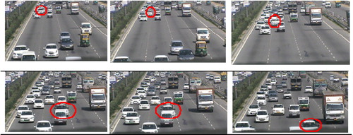

⚡
Dynamic Traffic Flow
Home
Live Dashboard
Analytics
Hardware
About Us
Live Traffic Dashboard
Real-time monitoring and control of intersection traffic flow
Live Intersection Feed
ACTIVE

Select Location
-- Choose Intersection --
Intersection A
Intersection B
Intersection C
Get Traffic Status
Vehicle Counts (ML Model)
Waiting for data...
Current Signal Status
Select a location to see live traffic signal output.